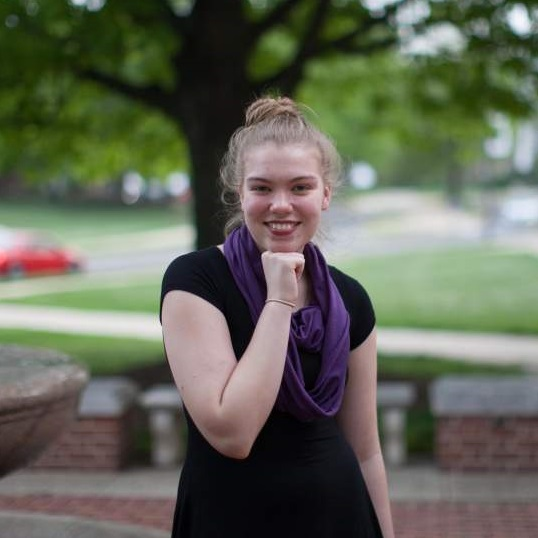
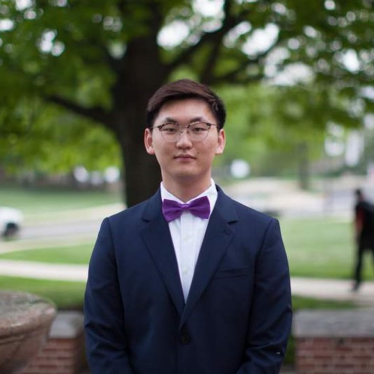
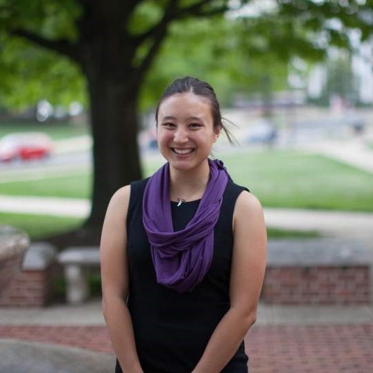
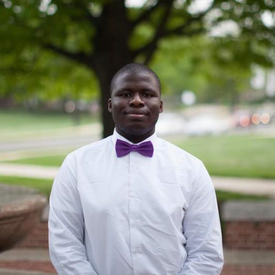
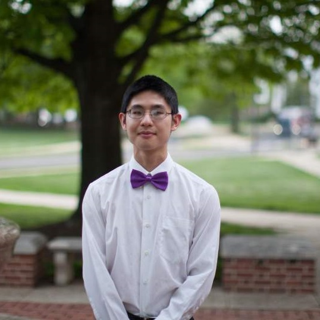
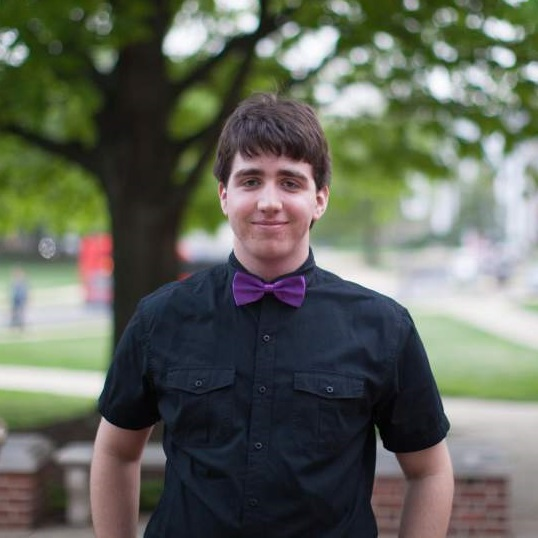
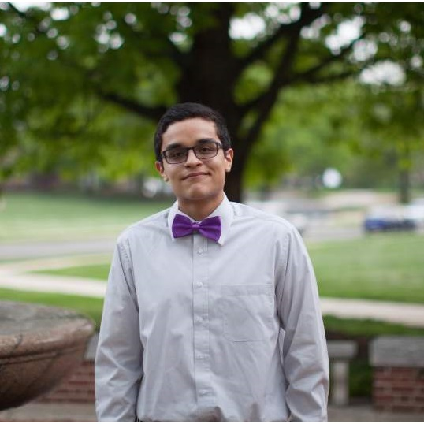
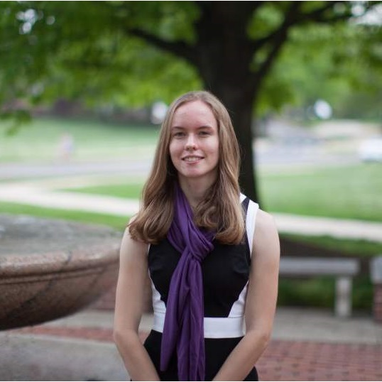
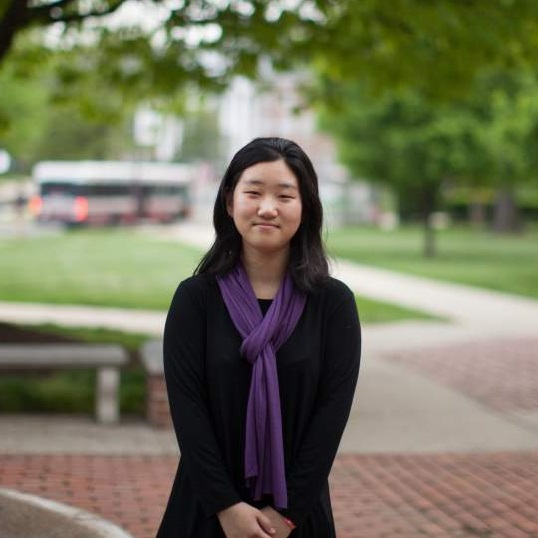
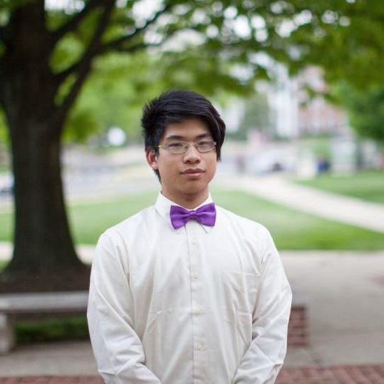

Christine Bailey
Christine Bailey is a computer science major and physics minor from Lanham, MD. She spends most of her time working at the gym as a lifeguard supervisor, lifeguard instructor, and aquatics technician. In her spare time, she enjoys playing piano and percussion, swimming, going to concerts, and taking unjustifiably long naps.
Matthew Chung
Matthew Chung is a Sophomore Computer Science and Mathematics double major. He likes producing music, playing volleyball, and cooking varous food.
Jacqueline Deprey
Jacqueline Deprey (Financial Liaison) is a Computer Science and Business Supply Chain Management double major from Rockville, Maryland. She is a member of the QUEST Honors Program, a volunteer tour guide with Maryland Images, and a tutor through the Maryland Center for Women in Information Technology. In her free time, you can find Jacqueline running, watching Netflix, or hanging out friends.
Abdulfatai Fayoka
Abdulfatai Fayoka is a computer engineering major. He is orginally from Nigeria in Western Africa. He is a massive soccer fan, and his favorite team is Chelsea FC.
Yu Lu
Yu Lu is a computer science and math double major. In his free time, he likes finding new novels and poetry to read, reading about technology, and watching his favorite DC sports teams lose in the playoffs.





John Nolan
John Nolan is studying Mathematics and Physics at UMD, and he hopes to pursue a career in academic research. He is excited to work with Team ART to expand his scientific knowledge base and to apply his understanding of advanced mathematics to help the world. When not studying or performing research, he enjoys playing the cello in the UMD Gamer Symphony Orchestra and participating in quiz bowl competitions.
Ivan Quiles
Ivan Quiles is a Computer Science major from Glen Burnie Maryland. He is interested in cryptocurrences (bitcoin, ethereum, etc.) and machine learning. In his spare time he hangs out with his friends and reads the news/books.
Cameron Soderberg
Cameron Soderberg is an electrical engineering major planning on pursuing a concentration in computer engineering. She grew up as a navy brat and moved several times throughout the United States but considers home to be St. Mary's County, Maryland. She is involved in UMD's chapter of Engineering World Health and in her free time enjoys running, reading, and arts & crafts with friends.
Junie Wu
Junie Wu is a Physiology and neurobiology major on the pre-med track. When she’s not staying up until 6 am writing lab reports or watching crime tv shows, she interns at the Araneda lab, illustrates children’s books for Gift to Uplift, plays violin for the Gamers Symphony Orchestra, reads Terry Pratchett’s Discworld novels or Scott Lynch’s Gentlemen Bastards series, reads dermatology blogs, and hangs out with friends.
Richard Yu
Richard Yu is an aerospace engineering and computer science double major from Towson, Maryland. He enjoys playing Starcraft 2, learning about cars, and reading books.